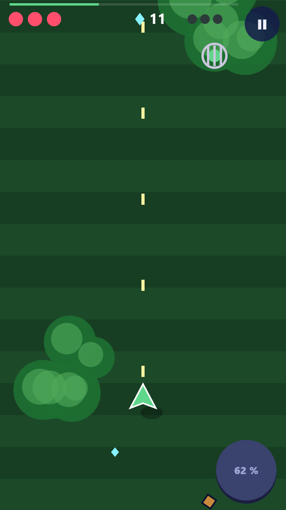

<title>Star Patrol, Jungle peinte</title>
<meta name="claude:viewport-fit-sides" content="cover">
<link rel="preconnect" href="https://fonts.googleapis.com">
<link rel="stylesheet" href="https://fonts.googleapis.com/css2?family=Grandstander:wght@600;800&family=Andika:wght@400;700&display=swap">
<style>
/* Planche « livre illustré » : la page elle-même est le papier de l'album (un seul
   thème, voulu). Trois téléphones côte à côte : avant, mission peinte, carte peinte. */
:root {
  color-scheme: light;
  --papier: #f5ebd8;
  --papier-ombre: #e4d7b8;
  --encre: #1b1612;
  --encre-douce: #5a4c3c;
  --feuille: #27332b;
  --or: #f2b632;
  --titre: "Grandstander", "Andika", system-ui, sans-serif;
  --corps: "Andika", system-ui, sans-serif;
}
body { background: var(--papier); color: var(--encre); font-family: var(--corps); font-size: 17px; line-height: 1.5; }
main { max-width: 1240px; margin: 0 auto; padding-block: 28px 64px; padding-left: max(16px, env(safe-area-inset-left, 0px)); padding-right: max(16px, env(safe-area-inset-right, 0px)); display: grid; gap: 36px; }
h1, h2 { font-family: var(--titre); font-weight: 800; margin: 0; text-wrap: balance; }
h1 { font-size: clamp(30px, 6vw, 46px); line-height: 1.05; }
h2 { font-size: 24px; }
p { margin: 0; max-width: 64ch; }
header { display: grid; gap: 10px; }
.telephones { display: flex; flex-wrap: wrap; gap: 28px; justify-content: center; align-items: flex-start; }
figure { margin: 0; display: grid; gap: 10px; justify-items: center; width: min(360px, 100%); }
.ecran { width: 100%; aspect-ratio: 360 / 640; border: 3px solid var(--encre); border-radius: 26px; overflow: hidden; background: var(--feuille); box-shadow: 5px 6px 0 var(--encre); }
.ecran canvas, .ecran img { display: block; width: 100%; height: 100%; }
figure.avant .ecran { box-shadow: 5px 6px 0 #00000033; border-color: #00000055; }
figcaption { font-family: var(--titre); font-weight: 600; font-size: 18px; text-align: center; }
figcaption small { display: block; font-family: var(--corps); font-weight: 400; font-size: 15px; color: var(--encre-douce); max-width: 34ch; }
.refs { display: grid; grid-template-columns: repeat(auto-fit, minmax(220px, 1fr)); gap: 18px; }
.ref { display: grid; gap: 8px; align-content: start; }
.ref b { font-family: var(--titre); font-weight: 600; font-size: 17px; }
.ref span { font-size: 15px; color: var(--encre-douce); }
.nuancier { display: flex; height: 26px; border: 2.5px solid var(--encre); border-radius: 6px; overflow: hidden; }
.nuancier i { flex: 1; }
footer p { font-size: 15px; color: var(--encre-douce); }
</style>

<main>
  <header>
    <h1>Star Patrol, la Jungle peinte</h1>
    <p>Maquette de la direction « livre illustré », tirée de quatre références regardées en images et de leurs couleurs mesurées. Le décor est une jungle de Rousseau vue d'en haut, mate et sans contour. L'interface est du papier crème cerné d'encre. Seul ce qui se joue brille : l'avion, les tirs, les cristaux.</p>
  </header>

  <section class="telephones">
    <figure class="avant">
      <div class="ecran"></div>
      <figcaption>Aujourd'hui<small>Formes simples, bandes vertes unies, boutons ronds sombres : le look qu'on nous reproche.</small></figcaption>
    </figure>
    <figure>
      <div class="ecran"><canvas id="mission" width="360" height="640" aria-label="Maquette d'une mission dans la Jungle peinte"></canvas></div>
      <figcaption>Mission 3, « La rivière »<small>Feuillages en couches, rivière, une lumière de matin. Tirs bleus à avaler, rouges qui blessent.</small></figcaption>
    </figure>
    <figure>
      <div class="ecran"><canvas id="carte" width="360" height="640" aria-label="Maquette de la carte du système, planètes à l'aquarelle"></canvas></div>
      <figcaption>La carte<small>Papier de l'album, planètes à l'aquarelle comme celles du Petit Prince.</small></figcaption>
    </figure>
  </section>

  <section class="refs" aria-label="Références et couleurs mesurées">
    <div class="ref"><b>Henri Rousseau</b><span>Le feuillage : des feuilles plates en couches, chacune avec sa nervure claire.</span><div class="nuancier"><i style="background:#1a2725"></i><i style="background:#27332b"></i><i style="background:#3d6340"></i><i style="background:#7a9a52"></i><i style="background:#776738"></i><i style="background:#c8362b"></i></div></div>
    <div class="ref"><b>Le Chant de la mer</b><span>Les formes rondes, le grain du papier, une palette courte par scène.</span><div class="nuancier"><i style="background:#0b2538"></i><i style="background:#162737"></i><i style="background:#351a18"></i><i style="background:#8fb9a8"></i><i style="background:#d9ece3"></i></div></div>
    <div class="ref"><b>Le Petit Prince</b><span>Le papier crème, le ciel pâle, les petites planètes à l'aquarelle.</span><div class="nuancier"><i style="background:#f5ebd8"></i><i style="background:#e4d7b8"></i><i style="background:#cad9e8"></i><i style="background:#c7ba97"></i></div></div>
    <div class="ref"><b>TwinBee</b><span>La lisibilité : des couleurs franches pour tout ce qui se joue.</span><div class="nuancier"><i style="background:#027dd8"></i><i style="background:#01b2e3"></i><i style="background:#03e789"></i><i style="background:#e7b68a"></i></div></div>
  </section>

  <footer><p>Tout est peint par le code, sans image téléchargée : c'est ce que fera le jeu. Polices : Grandstander pour les titres, Andika (dessinée pour les enfants qui apprennent à lire) pour les textes.</p></footer>
</main>

<script>
// ---------- outils ----------
function hasard(graine) { let a = graine >>> 0; return () => { a = (a + 0x6D2B79F5) >>> 0; let t = a; t = Math.imul(t ^ (t >>> 15), t | 1); t ^= t + Math.imul(t ^ (t >>> 7), t | 61); return ((t ^ (t >>> 14)) >>> 0) / 4294967296; }; }
const ENCRE = '#1b1612', PAPIER = '#f5ebd8';
const W = 360, H = 640, DPR = Math.min(2, window.devicePixelRatio || 1);
function toile(id) { const c = document.getElementById(id); c.width = W * DPR; c.height = H * DPR; const x = c.getContext('2d'); x.scale(DPR, DPR); return x; }

// Grain de papier : calculé une fois, posé par-dessus en « multiply » très léger
const grain = (() => {
  const c = document.createElement('canvas'); c.width = c.height = 256; const x = c.getContext('2d');
  const im = x.createImageData(256, 256), r = hasard(7);
  for (let i = 0; i < im.data.length; i += 4) { const v = 200 + r() * 55; im.data[i] = v; im.data[i + 1] = v * 0.98; im.data[i + 2] = v * 0.94; im.data[i + 3] = 255; }
  x.putImageData(im, 0, 0);
  for (let k = 0; k < 140; k++) { x.strokeStyle = `rgba(120,100,70,${0.05 + r() * 0.06})`; x.lineWidth = 0.6; x.beginPath(); const px = r() * 256, py = r() * 256, a = r() * Math.PI; x.moveTo(px, py); x.lineTo(px + Math.cos(a) * (6 + r() * 14), py + Math.sin(a) * (6 + r() * 14)); x.stroke(); }
  return c;
})();
function poserGrain(x, force) { x.save(); x.globalCompositeOperation = 'multiply'; x.globalAlpha = force; x.fillStyle = x.createPattern(grain, 'repeat'); x.fillRect(0, 0, W, H); x.restore(); }

// Une tache de gouache : contour irrégulier, bord un peu plus foncé (la peinture s'accumule)
function tache(x, r, cx, cy, rx, ry, couleur, bord, alpha = 1) {
  x.save(); x.globalAlpha = alpha; x.beginPath();
  const n = 22, ph = r() * 6;
  for (let i = 0; i <= n; i++) { const a = i / n * Math.PI * 2, k = 1 + Math.sin(a * 3 + ph) * 0.05 + (r() - 0.5) * 0.06; const px = cx + Math.cos(a) * rx * k, py = cy + Math.sin(a) * ry * k; i ? x.lineTo(px, py) : x.moveTo(px, py); }
  x.closePath(); x.fillStyle = couleur; x.fill();
  if (bord) { x.strokeStyle = bord; x.lineWidth = 1.6; x.globalAlpha = alpha * 0.45; x.stroke(); }
  x.restore();
}

// ---------- la mission ----------
function feuilleLance(x, r, cx, cy, long, larg, ang, couleur, nervure) {
  x.save(); x.translate(cx, cy); x.rotate(ang);
  x.beginPath(); x.moveTo(0, 0);
  x.bezierCurveTo(larg * 0.9, long * 0.25, larg * 0.7, long * 0.75, 0, long);
  x.bezierCurveTo(-larg * 0.7, long * 0.75, -larg * 0.9, long * 0.25, 0, 0);
  x.fillStyle = couleur; x.fill();
  x.strokeStyle = 'rgba(0,0,0,.18)'; x.lineWidth = 1.2; x.stroke(); // bord de gouache, pas un contour
  x.strokeStyle = nervure; x.lineWidth = 1.3; x.globalAlpha = 0.75;
  x.beginPath(); x.moveTo(0, long * 0.04); x.quadraticCurveTo(larg * 0.08, long * 0.5, 0, long * 0.94); x.stroke();
  x.lineWidth = 0.8; x.globalAlpha = 0.5;
  for (let k = 1; k <= 4; k++) { const t = k / 5, y = long * t; x.beginPath(); x.moveTo(0, y); x.quadraticCurveTo(larg * 0.3, y + long * 0.06, larg * 0.55 * Math.sin(t * Math.PI), y + long * 0.1); x.moveTo(0, y); x.quadraticCurveTo(-larg * 0.3, y + long * 0.06, -larg * 0.55 * Math.sin(t * Math.PI), y + long * 0.1); x.stroke(); }
  x.restore();
}
function palme(x, r, cx, cy, long, ang, couleur, clair) {
  x.save(); x.translate(cx, cy); x.rotate(ang);
  x.strokeStyle = couleur; x.lineWidth = 2.2; x.beginPath(); x.moveTo(0, 0); x.quadraticCurveTo(long * 0.12, long * 0.5, 0, long); x.stroke();
  for (let i = 1; i < 16; i++) {
    const t = i / 16, y = long * t, l = long * 0.36 * Math.sin(t * Math.PI) + 4;
    for (const s of [-1, 1]) { x.save(); x.translate(long * 0.12 * 4 * t * (1 - t) * 0.5, y); x.rotate(s * (0.9 - t * 0.3)); feuilleLance(x, r, 0, 0, l, 4.2, 0, i % 3 ? couleur : clair, 'rgba(255,255,230,.35)'); x.restore(); }
  }
  x.restore();
}
function feuilleRonde(x, r, cx, cy, rad, ang, couleur, nervure) {
  x.save(); x.translate(cx, cy); x.rotate(ang);
  x.beginPath(); x.moveTo(0, -rad * 0.15);
  x.bezierCurveTo(rad * 1.1, -rad * 0.9, rad * 1.25, rad * 0.7, 0, rad);
  x.bezierCurveTo(-rad * 1.25, rad * 0.7, -rad * 1.1, -rad * 0.9, 0, -rad * 0.15);
  x.fillStyle = couleur; x.fill(); x.strokeStyle = 'rgba(0,0,0,.16)'; x.lineWidth = 1.2; x.stroke();
  x.strokeStyle = nervure; x.globalAlpha = 0.6; x.lineWidth = 1.1;
  for (let k = -2; k <= 2; k++) { x.beginPath(); x.moveTo(0, -rad * 0.05); x.quadraticCurveTo(k * rad * 0.3, rad * 0.3, k * rad * 0.55, rad * 0.78); x.stroke(); }
  x.restore();
}
function fleur(x, r, cx, cy, rad, couleur, coeur) {
  x.save(); x.translate(cx, cy); x.rotate(r() * 6);
  for (let i = 0; i < 5; i++) { x.rotate(Math.PI * 2 / 5); x.beginPath(); x.ellipse(0, rad * 0.62, rad * 0.42, rad * 0.62, 0, 0, Math.PI * 2); x.fillStyle = couleur; x.fill(); x.strokeStyle = 'rgba(80,10,10,.25)'; x.lineWidth = 1; x.stroke(); }
  x.beginPath(); x.arc(0, 0, rad * 0.3, 0, Math.PI * 2); x.fillStyle = coeur; x.fill();
  x.restore();
}
function riviere(x) {
  const pts = []; for (let y = -20; y <= H + 20; y += 20) pts.push([250 + Math.sin(y / 95) * 38 + Math.sin(y / 37) * 8, y]);
  const bande = (larg, couleur, a = 1) => { x.save(); x.globalAlpha = a; x.strokeStyle = couleur; x.lineWidth = larg; x.lineCap = 'round'; x.lineJoin = 'round'; x.beginPath(); pts.forEach(([px, py], i) => (i ? x.lineTo(px, py) : x.moveTo(px, py))); x.stroke(); x.restore(); };
  bande(96, '#3f6b5c'); bande(84, '#6f9e8c'); bande(66, '#8fb9a8'); bande(30, '#a9cdbd', 0.8);
  x.save(); x.strokeStyle = '#d9ece3'; x.lineWidth = 2; x.lineCap = 'round'; x.globalAlpha = 0.7;
  for (let k = 0; k < 26; k++) { const i = 2 + Math.floor(k * 1.3) % (pts.length - 3), [px, py] = pts[i]; const dx = (k % 3 - 1) * 16; x.beginPath(); x.moveTo(px + dx - 9, py + (k % 5)); x.quadraticCurveTo(px + dx, py - 4 + (k % 5), px + dx + 9, py + (k % 5)); x.stroke(); }
  x.restore();
  return pts;
}
function decorJungle(x) {
  const r = hasard(42);
  x.fillStyle = '#22382c'; x.fillRect(0, 0, W, H);
  // couche du fond : grandes masses sombres
  for (let i = 0; i < 26; i++) tache(x, r, r() * W, r() * H, 40 + r() * 50, 30 + r() * 40, ['#1a2725', '#24332b', '#1f3a2c', '#2a3d2a'][i % 4], null, 0.9);
  riviere(x);
  // couches de feuilles, du sombre au clair ; la rivière reste en partie dégagée
  const couches = [
    { n: 70, coul: ['#1a2725', '#27332b', '#24402f'], nerv: 'rgba(160,190,140,.35)', taille: [26, 46] },
    { n: 60, coul: ['#2f5238', '#3d6340', '#355c3c', '#4a6a3a'], nerv: 'rgba(210,225,170,.45)', taille: [22, 40] },
    { n: 30, coul: ['#557a46', '#7a9a52', '#6b8a48', '#776738'], nerv: 'rgba(240,240,200,.55)', taille: [18, 34] },
    { n: 14, coul: ['#93a95e', '#b7c27a', '#a3b465', '#9b7f3e'], nerv: 'rgba(255,250,215,.6)', taille: [14, 26] },
  ];
  couches.forEach((c, ci) => {
    for (let i = 0; i < c.n; i++) {
      let px = r() * (W + 40) - 20, py = r() * (H + 40) - 20;
      const riv = 250 + Math.sin(py / 95) * 38 + Math.sin(py / 37) * 8;
      if (Math.abs(px - riv) < 34 && ci > 0) px = riv + (px < riv ? -1 : 1) * (40 + r() * 30); // berges, pas dans l'eau
      if (ci >= 2 && px > 90 && px < 200 && py > 260 && py < 600 && r() < 0.6) continue; // couloir plus calme où l'on pilote
      const coul = c.coul[Math.floor(r() * c.coul.length)], t = c.taille[0] + r() * (c.taille[1] - c.taille[0]), ang = r() * Math.PI * 2;
      const forme = r();
      if (forme < 0.5) for (let k = 0; k < 3; k++) feuilleLance(x, r, px, py, t * 1.5, t * 0.45, ang + (k - 1) * 0.55, coul, c.nerv);
      else if (forme < 0.78) feuilleRonde(x, r, px, py, t * 0.75, ang, coul, c.nerv);
      else palme(x, r, px, py, t * 2.6, ang, coul, c.coul[0]);
    }
    if (ci === 1) { // fleurs entre deux couches, comme chez Rousseau
      for (let i = 0; i < 9; i++) fleur(x, r, r() * W, r() * H, 7 + r() * 5, ['#c8362b', '#e9a3a0', '#c8362b', '#f2ead3'][i % 4], '#f2b632');
    }
  });
  // la lumière du matin, en haut à gauche, puis un voile au bas (profondeur)
  const g = x.createRadialGradient(40, 30, 10, 40, 30, 420); g.addColorStop(0, 'rgba(255,236,170,.32)'); g.addColorStop(1, 'rgba(255,236,170,0)');
  x.fillStyle = g; x.fillRect(0, 0, W, H);
  for (let i = 0; i < 12; i++) { const px = r() * W, py = r() * H * 0.8; const gg = x.createRadialGradient(px, py, 2, px, py, 26 + r() * 22); gg.addColorStop(0, 'rgba(255,245,200,.22)'); gg.addColorStop(1, 'rgba(255,245,200,0)'); x.fillStyle = gg; x.fillRect(px - 60, py - 60, 120, 120); }
  const v = x.createLinearGradient(0, H * 0.6, 0, H); v.addColorStop(0, 'rgba(15,25,20,0)'); v.addColorStop(1, 'rgba(15,25,20,.28)'); x.fillStyle = v; x.fillRect(0, 0, W, H);
  x.fillStyle = 'rgba(18,30,24,.14)'; x.fillRect(0, 0, W, H); // le décor recule d'un cran : le jeu passe devant
  poserGrain(x, 0.22);
}

// --- ce qui se joue : contour d'encre et halo de sa couleur ---
function halo(x, cx, cy, rad, couleur) { const g = x.createRadialGradient(cx, cy, 0, cx, cy, rad); g.addColorStop(0, couleur); g.addColorStop(1, 'rgba(0,0,0,0)'); x.fillStyle = g; x.beginPath(); x.arc(cx, cy, rad, 0, Math.PI * 2); x.fill(); }
function avion(x, cx, cy) {
  halo(x, cx, cy, 46, 'rgba(255,220,140,.35)');
  x.save(); x.translate(cx, cy); x.lineJoin = 'round'; x.lineCap = 'round'; x.strokeStyle = ENCRE; x.lineWidth = 3;
  // ombre portée sur les feuilles
  x.save(); x.translate(8, 14); x.globalAlpha = 0.25; x.fillStyle = '#0c1410'; x.beginPath(); x.moveTo(-32, 6); x.lineTo(32, 6); x.lineTo(6, -6); x.lineTo(0, -26); x.lineTo(-6, -6); x.closePath(); x.fill(); x.restore();
  // ailes
  x.beginPath(); x.moveTo(-34, 8); x.quadraticCurveTo(-18, -4, -4, -6); x.lineTo(4, -6); x.quadraticCurveTo(18, -4, 34, 8); x.quadraticCurveTo(0, 14, -34, 8); x.closePath(); x.fillStyle = '#e0603a'; x.fill(); x.stroke();
  x.strokeStyle = 'rgba(255,230,200,.7)'; x.lineWidth = 2; x.beginPath(); x.moveTo(-26, 5); x.quadraticCurveTo(-14, -1, -6, -3); x.stroke();
  // empennage
  x.strokeStyle = ENCRE; x.lineWidth = 3; x.beginPath(); x.moveTo(-12, 26); x.quadraticCurveTo(0, 20, 12, 26); x.lineTo(8, 30); x.lineTo(-8, 30); x.closePath(); x.fillStyle = '#e0603a'; x.fill(); x.stroke();
  // fuselage crème
  x.beginPath(); x.moveTo(0, -30); x.bezierCurveTo(10, -24, 10, 18, 4, 30); x.lineTo(-4, 30); x.bezierCurveTo(-10, 18, -10, -24, 0, -30); x.closePath(); x.fillStyle = '#f2ead3'; x.fill(); x.stroke();
  x.strokeStyle = 'rgba(180,150,110,.6)'; x.lineWidth = 2; x.beginPath(); x.moveTo(4, -18); x.quadraticCurveTo(7, 0, 3, 24); x.stroke();
  // hélice qui tourne
  x.strokeStyle = 'rgba(27,22,18,.5)'; x.lineWidth = 2.2; x.beginPath(); x.ellipse(0, -32, 14, 3, 0, 0, Math.PI * 2); x.stroke();
  // les yeux, comme avant
  for (const s of [-1, 1]) { x.beginPath(); x.ellipse(s * 4.5, -12, 4, 5, 0, 0, Math.PI * 2); x.fillStyle = '#fff'; x.fill(); x.strokeStyle = ENCRE; x.lineWidth = 1.8; x.stroke(); x.beginPath(); x.arc(s * 4.5 + 0.6, -13.5, 2, 0, Math.PI * 2); x.fillStyle = ENCRE; x.fill(); }
  x.restore();
}
function tirJoueur(x, cx, cy) { halo(x, cx, cy, 10, 'rgba(255,230,150,.6)'); x.beginPath(); x.ellipse(cx, cy, 2.6, 7, 0, 0, Math.PI * 2); x.fillStyle = '#fff6d6'; x.fill(); x.strokeStyle = '#b8860b'; x.lineWidth = 1.2; x.stroke(); }
function tirBleu(x, cx, cy) { halo(x, cx, cy, 15, 'rgba(2,168,224,.55)'); x.beginPath(); x.arc(cx, cy, 6.5, 0, Math.PI * 2); x.fillStyle = '#02a8e0'; x.fill(); x.strokeStyle = '#04365a'; x.lineWidth = 1.8; x.stroke(); x.beginPath(); x.arc(cx - 1.2, cy - 1.2, 2.8, 0, Math.PI * 2); x.fillStyle = '#e8fbff'; x.fill(); }
function tirRouge(x, cx, cy) { halo(x, cx, cy, 16, 'rgba(232,64,42,.55)'); x.beginPath(); x.arc(cx, cy, 7, 0, Math.PI * 2); x.fillStyle = '#e8402a'; x.fill(); x.strokeStyle = '#4a0d06'; x.lineWidth = 2.6; x.stroke(); x.beginPath(); x.arc(cx - 2, cy - 2, 1.8, 0, Math.PI * 2); x.fillStyle = '#ffc7b8'; x.fill(); }
function cristal(x, cx, cy, t = 1) {
  halo(x, cx, cy, 13 * t, 'rgba(143,227,255,.5)');
  x.save(); x.translate(cx, cy); x.scale(t, t); x.lineJoin = 'round';
  x.beginPath(); x.moveTo(0, -8); x.lineTo(6, -2); x.lineTo(0, 9); x.lineTo(-6, -2); x.closePath(); x.fillStyle = '#8fe3ff'; x.fill(); x.strokeStyle = '#0d4a63'; x.lineWidth = 1.6; x.stroke();
  x.beginPath(); x.moveTo(-6, -2); x.lineTo(6, -2); x.moveTo(0, -8); x.lineTo(-2, -2); x.lineTo(0, 9); x.strokeStyle = 'rgba(13,74,99,.55)'; x.lineWidth = 1; x.stroke();
  x.beginPath(); x.moveTo(-3, -4); x.lineTo(0, -7); x.lineTo(1, -4); x.closePath(); x.fillStyle = '#fff'; x.fill();
  x.restore();
}
function luciole(x, cx, cy, a = 0) {
  halo(x, cx, cy + 6, 22, 'rgba(240,220,90,.5)');
  x.save(); x.translate(cx, cy); x.rotate(a); x.strokeStyle = ENCRE; x.lineWidth = 2.4; x.lineJoin = 'round';
  for (const s of [-1, 1]) { x.beginPath(); x.ellipse(s * 10, -4, 9, 5, s * 0.5, 0, Math.PI * 2); x.fillStyle = 'rgba(230,245,240,.75)'; x.fill(); x.stroke(); }
  x.beginPath(); x.ellipse(0, 0, 7, 10, 0, 0, Math.PI * 2); x.fillStyle = '#4b5a2c'; x.fill(); x.stroke();
  x.beginPath(); x.ellipse(0, 8, 6, 6, 0, 0, Math.PI * 2); x.fillStyle = '#f2df5a'; x.fill(); x.stroke();
  for (const s of [-1, 1]) { x.beginPath(); x.arc(s * 3, -6, 2.2, 0, Math.PI * 2); x.fillStyle = '#fff'; x.fill(); x.lineWidth = 1.2; x.stroke(); x.beginPath(); x.arc(s * 3, -5.4, 1, 0, Math.PI * 2); x.fillStyle = ENCRE; x.fill(); }
  x.lineWidth = 1.6; x.beginPath(); x.moveTo(-2, -10); x.quadraticCurveTo(-6, -16, -9, -15); x.moveTo(2, -10); x.quadraticCurveTo(6, -16, 9, -15); x.stroke();
  x.restore();
}
function scarabee(x, cx, cy) {
  x.save(); x.translate(cx, cy); x.strokeStyle = ENCRE; x.lineWidth = 2.6; x.lineCap = 'round'; x.lineJoin = 'round';
  for (const s of [-1, 1]) for (let k = -1; k <= 1; k++) { x.beginPath(); x.moveTo(s * 10, k * 7); x.quadraticCurveTo(s * 20, k * 9 - 2, s * 24, k * 10 + 4); x.stroke(); }
  x.beginPath(); x.ellipse(0, -15, 9, 7, 0, 0, Math.PI * 2); x.fillStyle = '#2a2440'; x.fill(); x.stroke();
  x.beginPath(); x.ellipse(0, 2, 15, 18, 0, 0, Math.PI * 2); x.fillStyle = '#3d6fb0'; x.fill(); x.stroke();
  x.beginPath(); x.moveTo(0, -15); x.lineTo(0, 20); x.stroke();
  x.strokeStyle = 'rgba(190,230,255,.75)'; x.lineWidth = 2.4; x.beginPath(); x.arc(-6, -2, 8, Math.PI * 1.1, Math.PI * 1.6); x.stroke(); x.beginPath(); x.arc(6, -2, 8, Math.PI * 1.4, Math.PI * 1.9); x.stroke();
  for (const s of [-1, 1]) { x.beginPath(); x.arc(s * 4, -17, 2.4, 0, Math.PI * 2); x.fillStyle = '#fff'; x.fill(); x.strokeStyle = ENCRE; x.lineWidth = 1.2; x.stroke(); }
  x.restore();
}
function perroquet(x, cx, cy) {
  x.save(); x.translate(cx, cy); x.strokeStyle = ENCRE; x.lineWidth = 2.6; x.lineJoin = 'round'; x.lineCap = 'round';
  // ailes déployées, vues de dessus
  for (const s of [-1, 1]) { x.beginPath(); x.moveTo(s * 6, -4); x.quadraticCurveTo(s * 30, -14, s * 40, 4); x.quadraticCurveTo(s * 28, 6, s * 22, 12); x.quadraticCurveTo(s * 14, 6, s * 6, 8); x.closePath(); x.fillStyle = '#3f8f4a'; x.fill(); x.stroke(); x.beginPath(); x.moveTo(s * 30, -2); x.lineTo(s * 38, 4); x.strokeStyle = '#2b5fa8'; x.lineWidth = 4; x.stroke(); x.strokeStyle = ENCRE; x.lineWidth = 2.6; }
  x.beginPath(); x.moveTo(-5, 10); x.lineTo(0, 30); x.lineTo(5, 10); x.closePath(); x.fillStyle = '#2b5fa8'; x.fill(); x.stroke();
  x.beginPath(); x.ellipse(0, 0, 9, 14, 0, 0, Math.PI * 2); x.fillStyle = '#c8362b'; x.fill(); x.stroke();
  x.beginPath(); x.moveTo(-4, 12); x.quadraticCurveTo(0, 22, 4, 12); x.fillStyle = '#f2b632'; x.fill(); x.stroke(); // bec, vers le bas : il vient vers nous
  for (const s of [-1, 1]) { x.beginPath(); x.arc(s * 4, 4, 2.6, 0, Math.PI * 2); x.fillStyle = '#fff'; x.fill(); x.lineWidth = 1.3; x.stroke(); x.beginPath(); x.arc(s * 4, 5, 1.2, 0, Math.PI * 2); x.fillStyle = ENCRE; x.fill(); }
  x.restore();
}
function cage(x, cx, cy) {
  x.save(); x.translate(cx, cy); x.lineJoin = 'round';
  halo(x, 0, 0, 34, 'rgba(255,240,200,.25)');
  x.beginPath(); x.arc(0, 0, 18, 0, Math.PI * 2); x.fillStyle = 'rgba(220,240,255,.55)'; x.fill(); x.strokeStyle = 'rgba(255,255,255,.8)'; x.lineWidth = 1.5; x.stroke();
  x.beginPath(); x.arc(0, 2, 9, 0, Math.PI * 2); x.fillStyle = '#f2ead3'; x.fill(); x.strokeStyle = ENCRE; x.lineWidth = 2; x.stroke();
  x.beginPath(); x.ellipse(0, 1, 6, 4.4, 0, 0, Math.PI * 2); x.fillStyle = '#2b5fa8'; x.fill(); x.beginPath(); x.ellipse(-2, 0, 2, 1.3, -0.4, 0, Math.PI * 2); x.fillStyle = '#e8fbff'; x.fill();
  x.strokeStyle = '#7a5a2a'; x.lineWidth = 3.4; x.lineCap = 'round';
  for (let k = -2; k <= 2; k++) { x.beginPath(); x.moveTo(k * 7.5, -20 + Math.abs(k) * 1.6); x.lineTo(k * 7.5, 20 - Math.abs(k) * 1.6); x.stroke(); }
  x.strokeStyle = ENCRE; x.lineWidth = 2.4; x.beginPath(); x.ellipse(0, -20, 16, 4, 0, 0, Math.PI * 2); x.fillStyle = '#9b7f3e'; x.fill(); x.stroke(); x.beginPath(); x.ellipse(0, 20, 16, 4, 0, 0, Math.PI * 2); x.fill(); x.stroke();
  x.restore();
}
function plante(x, cx, cy) { // plante carnivore sur la berge, qui crache vers le haut
  x.save(); x.translate(cx, cy); x.strokeStyle = ENCRE; x.lineWidth = 2.6; x.lineJoin = 'round';
  for (let k = 0; k < 5; k++) { x.save(); x.rotate(k * 1.256); x.beginPath(); x.moveTo(0, 0); x.quadraticCurveTo(12, 10, 0, 26); x.quadraticCurveTo(-12, 10, 0, 0); x.fillStyle = '#4f7a33'; x.fill(); x.stroke(); x.restore(); }
  x.beginPath(); x.arc(0, 0, 14, 0, Math.PI * 2); x.fillStyle = '#d65f86'; x.fill(); x.stroke();
  x.beginPath(); x.arc(0, 0, 7, 0, Math.PI * 2); x.fillStyle = '#5a1430'; x.fill();
  x.fillStyle = '#f2ead3'; for (let k = 0; k < 8; k++) { x.save(); x.rotate(k * Math.PI / 4); x.beginPath(); x.moveTo(-2, -7); x.lineTo(0, -11); x.lineTo(2, -7); x.fill(); x.restore(); }
  x.restore();
}
// --- l'interface : papier crème cerné d'encre ---
function papier(x, px, py, w, h, r, inclinaison = 0) {
  x.save(); x.translate(px + w / 2, py + h / 2); x.rotate(inclinaison);
  const chemin = () => { x.beginPath(); const n = 16; for (let i = 0; i <= n; i++) { const t = i / n; x.lineTo(-w / 2 + w * t, -h / 2 + (r() - 0.5) * 1.6); } for (let i = 0; i <= n; i++) { const t = i / n; x.lineTo(w / 2 - w * t, h / 2 + (r() - 0.5) * 1.6); } x.closePath(); };
  x.save(); x.translate(3, 3); chemin(); x.fillStyle = ENCRE; x.fill(); x.restore();
  chemin(); x.fillStyle = PAPIER; x.fill(); x.strokeStyle = ENCRE; x.lineWidth = 2.5; x.lineJoin = 'round'; x.stroke();
  x.restore();
}
function coeur(x, cx, cy, plein) {
  x.save(); x.translate(cx, cy); x.beginPath(); x.moveTo(0, 7); x.bezierCurveTo(-13, -2, -9, -12, 0, -6); x.bezierCurveTo(9, -12, 13, -2, 0, 7); x.closePath();
  if (plein) { x.fillStyle = '#c8362b'; x.fill(); }
  x.strokeStyle = ENCRE; x.lineWidth = 2.4; x.lineJoin = 'round'; x.stroke();
  if (plein) { x.beginPath(); x.ellipse(-4, -3.5, 2.4, 1.6, -0.6, 0, Math.PI * 2); x.fillStyle = '#ffd7cc'; x.fill(); }
  x.restore();
}
function interfaceMission(x) {
  const r = hasard(5);
  papier(x, 10, 12, 132, 40, r, -0.015);
  [true, true, true, false].forEach((p, i) => coeur(x, 32 + i * 29, 32, p));
  papier(x, 196, 12, 104, 40, r, 0.02);
  cristal(x, 218, 32, 1.05);
  x.fillStyle = ENCRE; x.font = '800 22px Grandstander'; x.textBaseline = 'middle'; x.fillText('128', 236, 33);
  // pause
  x.save(); x.translate(330, 32); x.beginPath(); x.arc(2, 2, 19, 0, Math.PI * 2); x.fillStyle = ENCRE; x.fill(); x.beginPath(); x.arc(0, 0, 19, 0, Math.PI * 2); x.fillStyle = PAPIER; x.fill(); x.strokeStyle = ENCRE; x.lineWidth = 2.5; x.stroke(); x.fillStyle = ENCRE; x.fillRect(-6, -7, 4, 14); x.fillRect(2, -7, 4, 14); x.restore();
  // arme et munitions
  papier(x, 10, 62, 120, 30, r, 0.01);
  x.font = '700 15px Andika'; x.fillStyle = ENCRE; x.fillText('Élastiques', 20, 77);
  x.fillStyle = '#c8362b'; for (let i = 0; i < 6; i++) { x.beginPath(); x.arc(102 + (i % 3) * 8, 72 + Math.floor(i / 3) * 9, 2.6, 0, Math.PI * 2); x.fill(); }
  // super-pouvoir, sous le pouce : disque de papier, jauge bleue à moitié peinte
  x.save(); x.translate(312, 588);
  x.beginPath(); x.arc(3, 3, 34, 0, Math.PI * 2); x.fillStyle = ENCRE; x.fill();
  x.beginPath(); x.arc(0, 0, 34, 0, Math.PI * 2); x.fillStyle = PAPIER; x.fill();
  x.save(); x.beginPath(); x.arc(0, 0, 34, 0, Math.PI * 2); x.clip(); x.fillStyle = '#02a8e0'; x.globalAlpha = 0.85; x.beginPath(); x.moveTo(-40, 8); x.quadraticCurveTo(-18, 2, 0, 8); x.quadraticCurveTo(18, 14, 40, 6); x.lineTo(40, 40); x.lineTo(-40, 40); x.closePath(); x.fill(); x.restore();
  x.beginPath(); x.arc(0, 0, 34, 0, Math.PI * 2); x.strokeStyle = ENCRE; x.lineWidth = 3; x.stroke();
  x.fillStyle = ENCRE; x.font = '800 14px Grandstander'; x.textAlign = 'center'; x.fillText('SUPER', 0, -6); x.font = '700 13px Andika'; x.fillText('62 %', 0, 10);
  x.restore();
}
function peindreMission() {
  const x = toile('mission');
  decorJungle(x);
  plante(x, 44, 210);
  cage(x, 96, 330);
  luciole(x, 120, 120, 0.1); luciole(x, 160, 96, 0); luciole(x, 200, 120, -0.1);
  perroquet(x, 290, 196);
  scarabee(x, 70, 430);
  // tirs ennemis : bleus à avaler, rouges qui blessent
  [[150, 250], [176, 286], [228, 300], [60, 300]].forEach(([a, b]) => tirBleu(x, a, b));
  [[270, 250], [250, 298], [232, 352], [98, 470], [124, 500], [44, 262]].forEach(([a, b]) => tirRouge(x, a, b));
  // cristaux lâchés par un ennemi abattu
  [[190, 392], [206, 404], [178, 410], [196, 424]].forEach(([a, b], i) => cristal(x, a, b, 0.9 + (i % 2) * 0.1));
  // tirs du joueur
  for (const [a, b] of [[174, 470], [186, 470], [174, 430], [186, 430], [174, 392], [186, 392]]) tirJoueur(x, a, b);
  avion(x, 180, 528);
  interfaceMission(x);
}

// ---------- la carte ----------
function planete(x, r, cx, cy, rad, coul, sombre, deco) {
  // aquarelle : plusieurs passes transparentes, bord plus foncé là où l'eau sèche
  for (let k = 0; k < 4; k++) tache(x, r, cx + (r() - 0.5) * 3, cy + (r() - 0.5) * 3, rad * (1 - k * 0.05), rad * (1 - k * 0.05), coul, null, 0.34);
  tache(x, r, cx + rad * 0.25, cy + rad * 0.25, rad * 0.6, rad * 0.55, sombre, null, 0.22);
  x.save(); x.beginPath(); x.arc(cx, cy, rad * 1.02, 0, Math.PI * 2); x.strokeStyle = sombre; x.globalAlpha = 0.55; x.lineWidth = 2.2; x.stroke(); x.restore();
  x.save(); x.beginPath(); x.arc(cx - rad * 0.35, cy - rad * 0.4, rad * 0.25, 0, Math.PI * 2); x.fillStyle = 'rgba(255,255,245,.35)'; x.fill(); x.restore();
  deco && deco(x, r, cx, cy, rad);
}
function arbresSurLeBord(x, r, cx, cy, rad) { // comme les baobabs du Petit Prince, mais une jungle
  for (let i = 0; i < 9; i++) {
    const a = -Math.PI * 0.95 + i * 0.22, px = cx + Math.cos(a) * rad, py = cy + Math.sin(a) * rad;
    x.save(); x.translate(px, py); x.rotate(a + Math.PI / 2);
    x.strokeStyle = '#5a4630'; x.lineWidth = 2; x.beginPath(); x.moveTo(0, 0); x.lineTo(0, -9 - (i % 3) * 3); x.stroke();
    tache(x, r, 0, -12 - (i % 3) * 3, 6 + (i % 2) * 2, 5, i % 2 ? '#3d6340' : '#557a46', '#24402f', 0.95);
    x.restore();
  }
  fleur(x, r, cx + rad * 0.2, cy - rad * 0.1, 4, '#c8362b', '#f2b632');
}
function dunes(x, r, cx, cy, rad) { x.save(); x.beginPath(); x.arc(cx, cy, rad, 0, Math.PI * 2); x.clip(); x.strokeStyle = 'rgba(120,80,30,.45)'; x.lineWidth = 2; for (let k = -2; k <= 2; k++) { x.beginPath(); x.moveTo(cx - rad, cy + k * rad * 0.32); x.quadraticCurveTo(cx, cy + k * rad * 0.32 - rad * 0.22, cx + rad, cy + k * rad * 0.32 + 4); x.stroke(); } x.restore(); }
function vagues(x, r, cx, cy, rad) { x.save(); x.beginPath(); x.arc(cx, cy, rad, 0, Math.PI * 2); x.clip(); x.strokeStyle = 'rgba(240,250,255,.6)'; x.lineWidth = 1.8; for (let k = -2; k <= 2; k++) for (let j = -2; j <= 2; j++) { const px = cx + j * rad * 0.42 + (k % 2) * rad * 0.2, py = cy + k * rad * 0.38; x.beginPath(); x.arc(px, py, 5, Math.PI * 1.1, Math.PI * 1.9); x.stroke(); } x.restore(); }
function cadenas(x, cx, cy) { x.save(); x.translate(cx, cy); x.strokeStyle = ENCRE; x.lineWidth = 2.2; x.beginPath(); x.arc(0, -4, 5, Math.PI, 0); x.stroke(); x.fillStyle = PAPIER; x.fillRect(-7, -4, 14, 11); x.strokeRect(-7, -4, 14, 11); x.restore(); }
function vaisseauMere(x, cx, cy) {
  x.save(); x.translate(cx, cy); x.rotate(-0.25); x.strokeStyle = ENCRE; x.lineWidth = 2.4; x.lineJoin = 'round';
  x.beginPath(); x.ellipse(0, 0, 30, 11, 0, 0, Math.PI * 2); x.fillStyle = '#e4d7b8'; x.fill(); x.stroke();
  x.beginPath(); x.ellipse(0, -6, 12, 9, 0, Math.PI, 0); x.fillStyle = '#cad9e8'; x.fill(); x.stroke();
  for (let k = -2; k <= 2; k++) { x.beginPath(); x.arc(k * 10, 2, 2.2, 0, Math.PI * 2); x.fillStyle = '#f2b632'; x.fill(); x.lineWidth = 1.2; x.stroke(); }
  x.restore();
}
function peindreCarte() {
  const x = toile('carte'), r = hasard(11);
  x.fillStyle = PAPIER; x.fillRect(0, 0, W, H);
  // lavis de ciel pâle en haut, ombre de papier en bas
  for (let i = 0; i < 9; i++) tache(x, r, r() * W, 40 + r() * 220, 70 + r() * 60, 40 + r() * 30, '#cad9e8', null, 0.28);
  for (let i = 0; i < 5; i++) tache(x, r, r() * W, 480 + r() * 160, 80 + r() * 40, 40, '#e4d7b8', null, 0.35);
  // petites étoiles dessinées à la plume
  x.strokeStyle = '#b8860b'; x.lineWidth = 1.3;
  for (let i = 0; i < 22; i++) { const px = r() * W, py = r() * 470, s = 2 + r() * 3; x.beginPath(); x.moveTo(px - s, py); x.lineTo(px + s, py); x.moveTo(px, py - s); x.lineTo(px, py + s); x.stroke(); }
  // le titre, à l'encre
  x.fillStyle = ENCRE; x.font = '800 42px Grandstander'; x.textAlign = 'center'; x.textBaseline = 'alphabetic';
  x.fillText('Star Patrol', 180, 64);
  tache(x, r, 296, 30, 9, 9, '#f2b632', '#b8860b', 0.9);
  x.font = '400 15px Andika'; x.fillStyle = '#5a4c3c'; x.fillText('Jungle · 2 missions sur 6 · 4 astronautes délivrés', 180, 90);
  // chemin en pointillés entre les planètes
  const P = [[118, 214], [262, 300], [104, 394], [258, 470]];
  x.save(); x.setLineDash([2, 7]); x.lineCap = 'round'; x.strokeStyle = ENCRE; x.lineWidth = 2.4; x.beginPath(); x.moveTo(...P[0]);
  for (let i = 1; i < P.length; i++) { const [a, b] = P[i - 1], [c, d] = P[i]; x.quadraticCurveTo((a + c) / 2 + (i % 2 ? 60 : -60), (b + d) / 2, c, d); } x.stroke(); x.restore();
  // les quatre planètes
  planete(x, r, ...P[0], 56, '#5f9a52', '#24402f', arbresSurLeBord);
  planete(x, r, ...P[1], 34, '#e0a75a', '#8a5a24', dunes);
  planete(x, r, ...P[2], 36, '#4f9bc4', '#1f5a7a', vagues);
  // la Ceinture : un anneau de cailloux autour du Glouton, seul monde où la lumière a le droit de briller
  x.save(); const [gx, gy] = P[3];
  halo(x, gx, gy, 46, 'rgba(155,106,214,.35)');
  tache(x, r, gx, gy, 18, 18, '#2a1d3a', null, 0.95);
  for (let i = 0; i < 16; i++) { const a = i / 16 * Math.PI * 2, px = gx + Math.cos(a) * 34, py = gy + Math.sin(a) * 13; tache(x, r, px, py, 4 + (i % 3), 3 + (i % 2), '#8a7d6a', '#4a4036', 0.95); }
  x.restore();
  // missions de la Jungle : des points sur l'orbite, les faits en encre pleine
  for (let i = 0; i < 6; i++) { const px = P[0][0] - 50 + i * 20, py = P[0][1] + 98; x.beginPath(); x.arc(px, py, i === 2 ? 8 : 6, 0, Math.PI * 2); x.fillStyle = i < 2 ? ENCRE : i === 2 ? '#f2b632' : PAPIER; x.fill(); x.strokeStyle = ENCRE; x.lineWidth = 2.2; x.stroke(); }
  vaisseauMere(x, 196, 150);
  for (const [i, [px, py]] of P.entries()) if (i) cadenas(x, px, py);
  // étiquettes des planètes
  x.font = '600 15px Grandstander'; x.fillStyle = ENCRE; x.textAlign = 'center';
  x.fillText('Jungle', P[0][0], P[0][1] + 78); x.fillText('Désert', P[1][0], P[1][1] + 52); x.fillText('Océan', P[2][0], P[2][1] + 54); x.fillText('Ceinture', P[3][0], P[3][1] + 50);
  // Hangar et Installer : étiquettes de papier ; Continuer : bouton de gouache sous le pouce
  papier(x, 24, 536, 146, 42, r, -0.012); papier(x, 190, 536, 146, 42, r, 0.012);
  x.font = '700 17px Grandstander'; x.fillText('Hangar', 97, 562); x.fillText('Installer', 263, 562);
  x.save(); x.beginPath(); x.arc(141, 551, 4.5, 0, Math.PI * 2); x.fillStyle = '#f2b632'; x.fill(); x.strokeStyle = ENCRE; x.lineWidth = 1.6; x.stroke(); x.restore();
  x.save(); x.translate(180, 612);
  x.beginPath(); x.roundRect(-152 + 3, -24 + 4, 304, 50, 16); x.fillStyle = ENCRE; x.fill();
  x.beginPath(); x.roundRect(-152, -24, 304, 50, 16); x.fillStyle = '#f2b632'; x.fill(); x.strokeStyle = ENCRE; x.lineWidth = 3; x.stroke();
  x.strokeStyle = 'rgba(255,245,210,.55)'; x.lineWidth = 2; x.beginPath(); x.moveTo(-136, -14); x.lineTo(60, -14); x.stroke();
  x.fillStyle = ENCRE; x.font = '800 19px Grandstander'; x.textBaseline = 'middle'; x.fillText('Continuer : La rivière', 0, 2);
  x.restore();
  poserGrain(x, 0.18);
}

document.fonts.ready.then(() => Promise.all([document.fonts.load('800 20px Grandstander'), document.fonts.load('700 15px Andika'), document.fonts.load('400 15px Andika')])).catch(() => {}).finally(() => { peindreMission(); peindreCarte(); });
</script>
